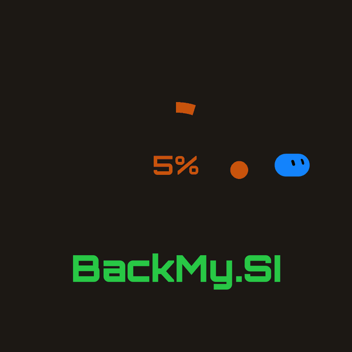

We're brand new. No big donors, no strings. 🚀
A notice board for people doing good work. Like SETI@home, but for tips: lots of small tips add up and keep their SI running. We find people doing great things, from SI builders to artists, buskers and everyday people with a brilliant idea, pin them to the board, and you tip them direct.
BRAND NEW · HELP US FIND OUR FIRSTSmall, independent people doing good work, with no big backers behind them.
With their say-so, they get a card: what they're building, a link to their work and their tip jar.
Tips go straight to them. We never take a cut.
We're brand new, built with Grok Bot and SI. We couldn't have done it without them, so now we want to help others with ideas that make a difference get backed too. We only ever show what people have already made public, and their ideas stay theirs.